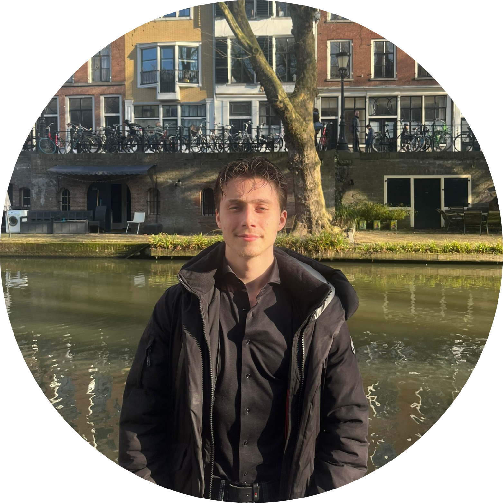

De mensen achter de JL

Voorzitter
Leidt vergaderingen, vertegenwoordigt de JL naar buiten en coördineert het bestuur. Verantwoordelijk voor overkoepelende strategie.

Secretaris
Beheert notulen, coördineert interne communicatie en administratie. Zorgt voor goede organisatie en documentatie.

Penningmeester
Beheert de financiën, zorgt voor transparantie en rapporteert aan leden. Verantwoordelijk voor budgettering en fondsenwerving.

Bestuurslid Media
Verantwoordelijk voor social media, content en digitale communicatie. Zorgt ervoor dat de JL-boodschap aankomt bij jongeren.
Roos, Tom en Martijn zijn de oprichters van de Jonge Libertariërs. Sinds de campagne voor de Tweede Kamerverkiezingen van maart 2021 zijn zij bezig geweest met het vormen van een actieve jongeren vereniging. Het huidige bestuur (Lukas, Niek, Mathijs en Aaron) zet dit werk voort met vernieuwing en groei.
Ieder jaar houden we verkiezingen. Bestuursleden kunnen zichzelf verkiesbaar stellen en worden gekozen door leden. Meer informatie over hoe dit werkt vind je in onze statuten en huishoudelijk reglement.
Neem contact met ons op via e-mail of het contactformulier.
Contacteer ons